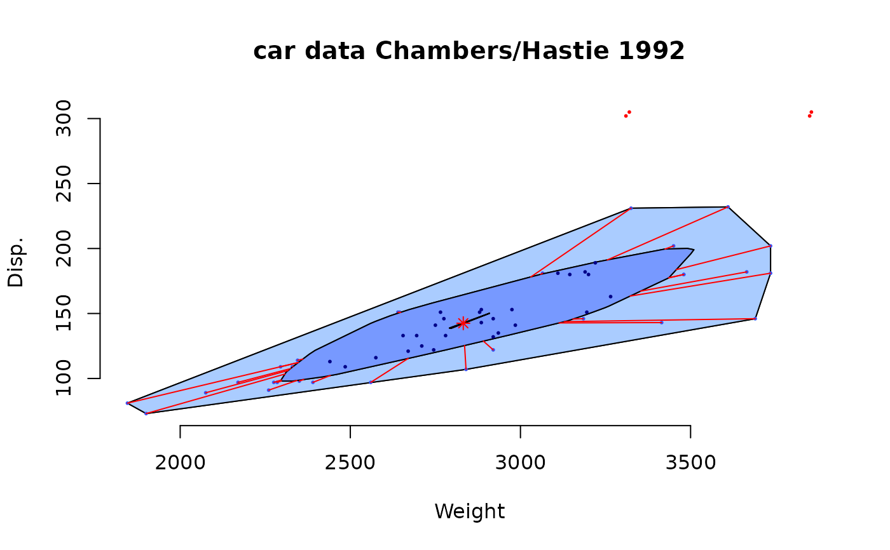
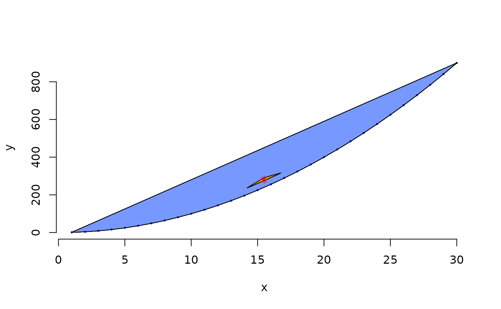
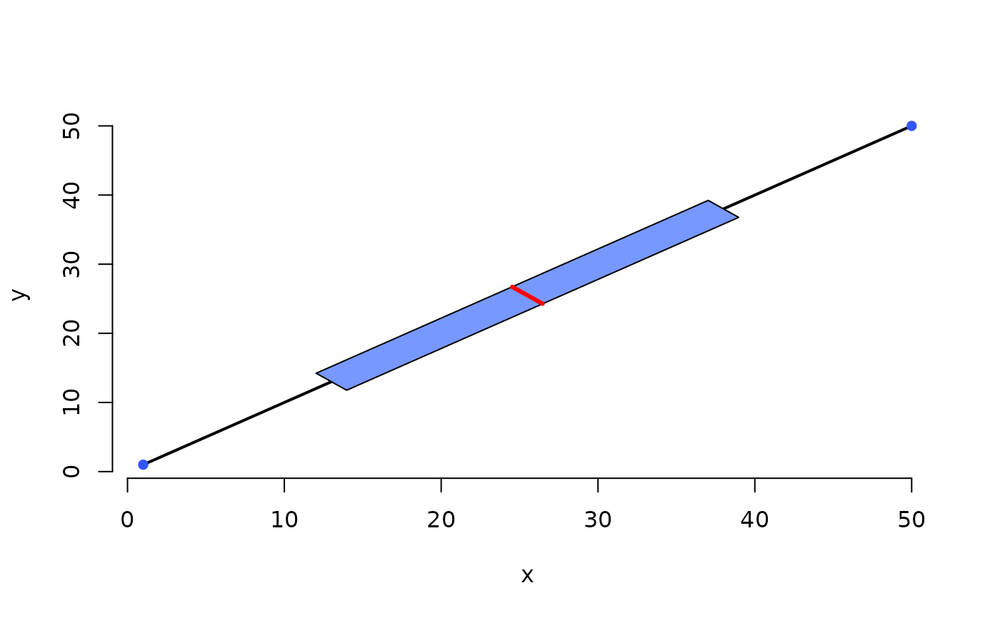
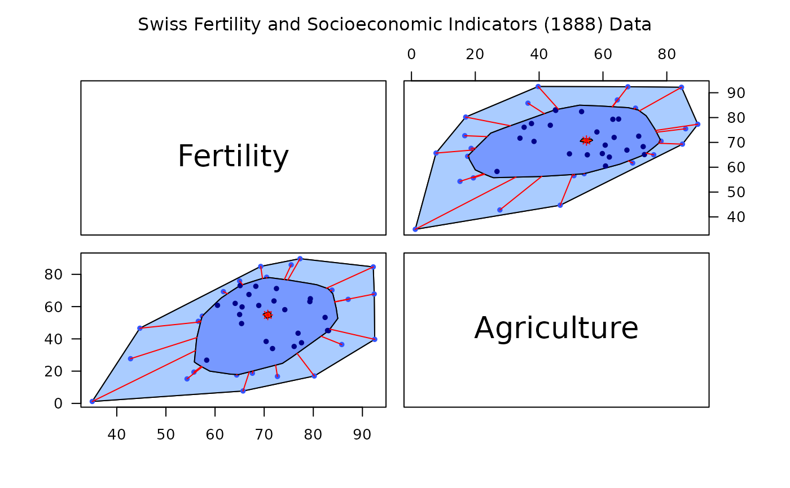

Bivariate Boxplot
PlotBag.RdPlotBag() creates a twodimensional boxplot called "bagplot" based on two numerical variables x and y. plot.PlotBag() is the plotting routine for a bagplot object. compute.PlotBag() contains the computation logic the object.
PlotBag(x, y, factor = 3, na.rm = FALSE, approx.limit = 300, show.outlier = TRUE, show.whiskers = TRUE, show.looppoints = TRUE, show.bagpoints = TRUE, show.loophull = TRUE, show.baghull = TRUE, create.plot = TRUE, add = FALSE, pch = 16, cex = 0.4, dkmethod = 2, precision = 1, verbose = FALSE, debug.plots = "no", col.loophull = "#aaccff", col.looppoints = "#3355ff", col.baghull = "#7799ff", col.bagpoints = "#000088", transparency = FALSE, ... ) PlotBagPairs(dm, trim = 0.0, main, numeric.only = TRUE, factor = 3, approx.limit = 300, pch = 16, cex = 0.8, precision = 1, col.loophull = "#aaccff", col.looppoints = "#3355ff", col.baghull = "#7799ff", col.bagpoints = "#000088", ...) compute.bagplot(x, y, factor = 3, na.rm = FALSE, approx.limit = 300, dkmethod = 2, precision = 1, verbose = FALSE, debug.plots = "no" ) # S3 method for bagplot plot(x, show.outlier = TRUE, show.whiskers = TRUE, show.looppoints = TRUE, show.bagpoints = TRUE, show.loophull = TRUE, show.baghull = TRUE, add = FALSE, pch = 16, cex = .4, verbose = FALSE, col.loophull = "#aaccff", col.looppoints = "#3355ff", col.baghull = "#7799ff", col.bagpoints = "#000088", transparency = FALSE,...)
Arguments
| x | x values of a data set;
in |
|---|---|
| y | y values of the data set |
| factor | factor defining the loop |
| na.rm | if |
| approx.limit | if the number of data points exceeds
|
| show.outlier | if |
| show.whiskers | if |
| show.looppoints | if |
| show.bagpoints | if |
| show.loophull | if |
| show.baghull | if |
| create.plot | if |
| add | if |
| pch | sets the plotting character |
| cex | sets characters size |
| dkmethod | 1 or 2, there are two method of approximating the bag, method 1 is very rough (only based on observations |
| precision | precision of approximation, default: 1 |
| verbose | automatic commenting of calculations |
| debug.plots | if |
| col.loophull | color of loop hull |
| col.looppoints | color of the points of the loop |
| col.baghull | color of bag hull |
| col.bagpoints | color of the points of the bag |
| transparency | see section details |
| dm | x |
| trim | x |
| main | x |
| numeric.only | x |
| ... | additional graphical parameters |
Details
A bagplot is a bivariate generalization of the well known
boxplot. It has been proposed by Rousseeuw, Ruts, and Tukey.
In the bivariate case the box of the boxplot changes to a
convex polygon, the bag of bagplot. In the bag are 50 percent
of all points. The fence separates points within the fence from
points outside. It is computed by increasing the
the bag. The loop is defined as the convex hull containing
all points inside the fence.
If all points are on a straight line you get a classical
boxplot.
PlotBag() plots bagplots that are very similar
to the one described in Rousseeuw et al.
Remarks:
The two dimensional median is approximated.
For large data sets the error will be very small.
On the other hand it is not very wise to make a (graphical)
summary of e.g. 10 bivariate data points.
In case you want to plot multiple (overlapping) bagplots,
you may want plots that are semi-transparent. For this
you can use the transparency flag.
If transparency==TRUE the alpha layer is set to '99' (hex).
This causes the bagplots to appear semi-transparent,
but ONLY if the output device is PDF and opened using:
pdf(file="filename.pdf", version="1.4").
For this reason, the default is transparency==FALSE.
This feature as well as the arguments
to specify different colors has been proposed by Wouter Meuleman.
Value
compute.bagplot returns an object of class
bagplot that could be plotted by
plot.bagplot().
An object of the bagplot class is a list with the following
elements: center is a two dimensional vector with
the coordinates of the center. hull.center is a
two column matrix, the rows are the coordinates of the
corners of the center region. hull.bag and
hull.loop contain the coordinates of the hull of the bag
and the hull of the loop. pxy.bag shows you the
coordinates of the points of the bag. pxy.outer is
the two column matrix of the points that are within the
fence. pxy.outlier represent the outliers. The vector
hdepths shows the depths of data points. is.one.dim
is TRUE if the data set is (nearly) one dimensional.
The dimensionality is decided by analysing the result of prcomp
which is stored in the element prdata. xy shows you
the data that are used for the bagplot. In the case of very large
data sets subsets of the data are used for constructing the
bagplot. A data set is very large if there are more data points
than approx.limit. xydata are the input data structured
in a two column matrix.
References
P. J. Rousseeuw, I. Ruts, J. W. Tukey (1999): The bagplot: a bivariate boxplot, The American Statistician, vol. 53, no. 4, 382--387
Author
Hans Peter Wolf <pwolf@wiwi.uni-bielefeld.de>
Note
Version of bagplot: 10/2012
See also
Examples
# example: 100 random points and one outlier dat <- cbind(rnorm(100) + 100, rnorm(100) + 300) dat <- rbind(dat, c(105,295)) PlotBag(dat,factor=2.5,create.plot=TRUE,approx.limit=300, show.outlier=TRUE,show.looppoints=TRUE, show.bagpoints=TRUE,dkmethod=2, show.whiskers=TRUE,show.loophull=TRUE, show.baghull=TRUE,verbose=FALSE)# example of Rousseeuw et al., see R-package rpart cardata <- structure(as.integer( c(2560,2345,1845,2260,2440, 2285, 2275, 2350, 2295, 1900, 2390, 2075, 2330, 3320, 2885, 3310, 2695, 2170, 2710, 2775, 2840, 2485, 2670, 2640, 2655, 3065, 2750, 2920, 2780, 2745, 3110, 2920, 2645, 2575, 2935, 2920, 2985, 3265, 2880, 2975, 3450, 3145, 3190, 3610, 2885, 3480, 3200, 2765, 3220, 3480, 3325, 3855, 3850, 3195, 3735, 3665, 3735, 3415, 3185, 3690, 97, 114, 81, 91, 113, 97, 97, 98, 109, 73, 97, 89, 109, 305, 153, 302, 133, 97, 125, 146, 107, 109, 121, 151, 133, 181, 141, 132, 133, 122, 181, 146, 151, 116, 135, 122, 141, 163, 151, 153, 202, 180, 182, 232, 143, 180, 180, 151, 189, 180, 231, 305, 302, 151, 202, 182, 181, 143, 146, 146)), .Dim = as.integer(c(60, 2)), .Dimnames = list(NULL, c("Weight", "Disp."))) PlotBag(cardata,factor=3,show.baghull=TRUE, show.loophull=TRUE,precision=1, dkmethod=2)# points of y=x*x PlotBag(x=1:30,y=(1:30)^2,verbose=FALSE,dkmethod=2)# one dimensional subspace PlotBag(x=1:50,y=1:50)#> data set one dimensional# pairwise bagplots par(las=1) PlotBagPairs(swiss[, 1:2], main="Swiss Fertility and Socioeconomic Indicators (1888) Data")#> Fertility Agriculture #> Courtelary 80.2 17.0 #> Delemont 83.1 45.1 #> Franches-Mnt 92.5 39.7 #> Moutier 85.8 36.5 #> Neuveville 76.9 43.5 #> Porrentruy 76.1 35.3 #> Broye 83.8 70.2 #> Glane 92.4 67.8 #> Gruyere 82.4 53.3 #> Sarine 82.9 45.2 #> Veveyse 87.1 64.5 #> Aigle 64.1 62.0 #> Aubonne 66.9 67.5 #> Avenches 68.9 60.7 #> Cossonay 61.7 69.3 #> Echallens 68.3 72.6 #> Grandson 71.7 34.0 #> Lausanne 55.7 19.4 #> La Vallee 54.3 15.2 #> Lavaux 65.1 73.0 #> Morges 65.5 59.8 #> Moudon 65.0 55.1 #> Nyone 56.6 50.9 #> Orbe 57.4 54.1 #> Oron 72.5 71.2 #> Payerne 74.2 58.1 #> Paysd'enhaut 72.0 63.5 #> Rolle 60.5 60.8 #> Vevey 58.3 26.8 #> Yverdon 65.4 49.5 #> Conthey 75.5 85.9 #> Entremont 69.3 84.9 #> Herens 77.3 89.7 #> Martigwy 70.5 78.2 #> Monthey 79.4 64.9 #> St Maurice 65.0 75.9 #> Sierre 92.2 84.6 #> Sion 79.3 63.1 #> Boudry 70.4 38.4 #> La Chauxdfnd 65.7 7.7 #> Le Locle 72.7 16.7 #> Neuchatel 64.4 17.6 #> Val de Ruz 77.6 37.6 #> ValdeTravers 67.6 18.7 #> V. De Geneve 35.0 1.2 #> Rive Droite 44.7 46.6 #> Rive Gauche 42.8 27.7